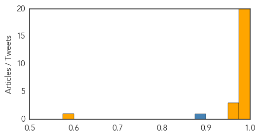

Cholera
30-Day Web Trend
0 alerts, 0 warnings
30-Day Twitter Trend
0 alerts, 0 warnings

Article Locations

Article Confidences

Top Articles:
-
No articles found for Apr 17, 2014
Top Tweets:
-
No tweets found for Apr 17, 2014
Ebola
30-Day Web Trend
28 alerts, 0 warnings

30-Day Twitter Trend
18 alerts, 0 warnings

Article Locations
Article Confidences
Top Articles:
- 1.000
- West African Ebola outbreak caused by new strain of disease
- 1.000
- Guinea says few new Ebola cases, outbreak nearly under control
- 1.000
- Ebola virus that has caused dozens of deaths in Guinea is new strain
- 1.000
- West Africa Deaths Mount as New Strain is Discovered
- 1.000
- UPDATE 1-West African Ebola outbreak caused by new strain of disease - study
- 1.000
- Ebola virus circulating in Guinea is new strain
- 1.000
- West African Ebola outbreak caused by new strain of disease: study
- 1.000
- Study: Growing Guinea outbreak caused by new Ebola strain
- 1.000
- Guinea says few new Ebola cases, outbreak nearly under control
- 0.999
- Keeping Ebola virus out of Nigeria
- 0.999
- Ebola virus disease, West Africa (Situation as of 16 April 2014) - Guinea
- 0.999
- Guinea says few new Ebola cases, outbreak nearly under control
- 0.998
- West Africa Ebola virus is a new strain
- 0.998
- Ebola Outbreaks Is New Strain of Killer Virus > KAGS TV
- 0.998
- UPDATE 1-West African Ebola outbreak caused by new strain of disease - study
- 0.996
- Guinean Ebola survivor tells of being 'reborn'
- 0.995
- Parliament Summons Health Minister on Ebola Update
- 0.992
- Death toll from Guinea Ebola outbreak rises to 122
- 0.986
- Nigeria At Risk Of Contracting Ebola Virus
- 0.979
- Death toll from Guinea Ebola outbreak rises to 122
- 0.970
- Gambia bans flights from Ebola-hit countries
- 0.965
- New Ebola Strain Causing West Africa Outbreak - Guinea
- 0.954
- Saskatoon woman helping fight Ebola outbreak in Africa - Saskatoon
- 0.583
- Three Britons in custody over hammer attack on UAE women
Top Tweets:
- 0.878
- RT: Twenty-three health care workers in Guinea have been affected with Ebola, incl. 13 deaths AskEbola